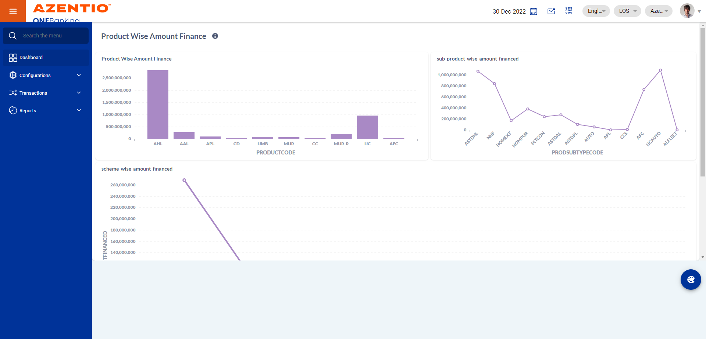

-
To verify the ULS master screen
11:54:54 AM / 30:39:461 Fail
To verify the ULS master screen
02.25.2023 11:54:54 02.25.2023 11:55:34 30:39:461 · #test-id=1FailTo verify maker user can able to create and submit the scheme master recordGiven Get the URL and login as makerstepdefinitions.HooksClass.addScreenshot(io.cucumber.java.Scenario)screenshotAnd get the test data of first test casestepdefinitions.HooksClass.addScreenshot(io.cucumber.java.Scenario)screenshot And Click the configurationStep skippedAnd click on config Manager main moduleStep skippedThen choose scheme master view buttonStep skippedAnd click on add button to create the scheme master recordStep skippedThen verify back and save buttons are visibleStep skippedAnd verify description field should be mendatory and user can able to pass the data in itStep skippedAnd verify product type should be non mendatory field and user can able to choose the product typeStep skippedAnd verify product sub type should be mendatory field and user can able to choose the product sub type dropdownStep skippedAnd verify loan currency drop down should be mendatory and user can able to select the data from the drop downStep skippedAnd verify Indexation Currency field should be non mendatory and user can able to select the drop downStep skippedAnd verify valid from calendar field field should be mendatory and user can able to slecet the dateStep skippedAnd verify valid to date calendar field should be mendatory and user can able to slecet the to dateStep skippedAnd verify min finance amount text box field should me mendatory and user can able to pass the data in itStep skippedAnd verify max finance amount text box field should be mendatory and user can able to pass the data in itStep skippedAnd verify Min Tenor In months text box field should be mendatory user can able to pass the data in itStep skippedAnd verify Max Tenor In months Text box field should be mendatory user can able to pass the data in itStep skippedAnd Verify Repayment Type field should be mendatory user can able to choose the dataStep skippedAnd verify flat reducing drop down field should be mendatory user can able to slecet the dataStep skippedAnd verify int Amortization method field should be non mendatory and user can able to select the dataStep skippedAnd verify compute installment on field should be mendatory and user can able to slecet the data from the dropdownStep skippedAnd verify inst due method field should be mendatory user can able to slect the data in drop downStep skippedAnd verify verify LPC grace period field should be non mendatory and user can able to fill the data in itStep skippedAnd verify principal Repayment Frequency field should be mendatory user can able to select the data from the drop downStep skippedAnd verify intereset repayment frequency field should be non mendatory user can able to select the data from drop downStep skippedAnd verify inst rounding logic field should be mendatory and user can able pass the data in itStep skippedAnd verify Loan Eligibility Calc field should be mendatory and user can able to select the data from the drop downStep skippedAnd verify Reamrk field should be non mendatory user can able to enter the reamrk in itStep skippedAnd verify include co applicant INC field should be mendatory user can able to select the data from the drop downStep skippedAnd verify include GuarantorInc field should be mendatory and user can able to select the data from drop downStep skippedAnd verify due period required field should be mendatory and user can able to select the data from drop downStep skippedAnd verify max co applicans field should be non mendatory and user can able to pass the data in itStep skippedAnd verify max guarantors field should be non mendatory user can able pass the data in itStep skippedAnd verify inst commence field should be mendatory user can able to slecet the data from the drop downStep skippedAnd verify days in year field should be mendatory user can able to select the data from dropdownStep skippedAnd verify multiple disburs tranch allowed field should be mendatory and user can able to slecet the data from the dropdownStep skippedAnd verify incluse income Dedu dept field should be non mendatory and user can able to select the data from dropdownStep skippedAnd verify Round off field should be non mendatory user can able to select the data from the drop downStep skippedAnd verify round off value field should be non mendatory user can able to pass the data in the text boxStep skippedAnd verfy offer validity field should be non mendatory user can able to pass the data in the text boxStep skippedAnd verify appropriation code field should be mendatory user can able to slecet the data from the drop downStep skippedAnd verify baloon allowed field should be non mendatory user can able to select the data from drop downStep skippedAnd verify maximum Baloon percentage field should be mendatory user can able to pass the data in itStep skippedAnd verify min IRR field should be non mendatory user can able to pass the dta in itStep skippedAnd verify Max Irr field should be non mendatory and user can able to pass the data in itStep skippedAnd verify pre owned asset should be non mendatory user can able to select the data from the drop downStep skippedAnd verify Day count for Bpi field should be non mendatory and user can able to select the data from drop downStep skippedAnd verify discount factor Rounding field should be non mendatory and user can able to pass the data in itStep skippedAnd verify interest charging starts from field should be non mendatory user can able to select the data from the drop downStep skippedAnd verify MI Recovery field should be non mendatory user can able to select the data from the dropdownStep skippedAnd verify BPI Recovery field should be non mendatory user can able to select the data from the drop downStep skippedAnd verify installment recovery type field should be non mendatiry user can able to select the data from the drop downStep skippedAnd verify rate type field should be non mendatory user can able to select the dta from drop downStep skippedAnd verify initiate disc factory field should be non mendatory user can able to select the data from drop downStep skippedAnd verify resch lockin text box should not be mendatory user can able to pass the data in text boxStep skippedAnd verify Max Resch In a year text box should be non mendatory user can able to pass the data in itStep skippedAnd verify total resch Allowed text box should be non mendatory user can able to pass the data in itStep skippedAnd verify Reschedulement Lock in starts field should be non mendatory user can able to slect the data from the drop downStep skippedAnd verify bulk payment field should be mendatory user can able to select the data from the drop downStep skippedAnd verify No of Bulk payment in Year field should be non mendatory user can able to pass the dataStep skippedAnd verify bulk payment Lockin Period field should be non mendatory user can able to pass the data in itStep skippedAnd verify bulk payment time interval field should be non mendatory user can able to enter the dataStep skippedAnd verify bulk payment Lock in starts from field should be non mendatory user can able to select the data teh data from drop downStep skippedAnd verify max bulk payment value field should be non mendatory user can able to enter the data in itStep skippedAnd verify min bulkpayment value field should be non mandatory user can able to enter the data into itStep skippedAnd verify immediate due date field should be non mendatory user can able to select the data from the drop downStep skippedAnd verify Min Bulk Payment Parameter field should be non mendatory user can able to select the data from the drop downStep skippedAnd verify max bulk payment parameter field should be non mendatory user can able to select the data from the drop downStep skippedAnd verify Fore closure Lockin field should be non mendatory user can able to enter the data in itStep skippedAnd verify ForeClosure Lock in starts from field should be non mendatory user can able to select the data from the drop downStep skippedAnd verify min Rebate Parameter field should be non mendatory user can able to select the data from the drop downStep skippedAnd verify min Rebate Value field should be non mendatory user can able to fill the data in the text boxStep skippedAnd verify max Rebate parameter should be non mendatory user can able to select the data from drop downStep skippedAnd verify max rebate value field should be non mendatory user can able to enter the data in itStep skippedAnd verify interest holiday field should be non mendatory user can able to pass the data in itStep skippedAnd verify principal holiday field should be non mendatory user can able to pass the data in itStep skippedAnd verify Recomputation of profit field should be non mendatory user can able to select the data from the drop downStep skippedAnd verify Is Set up allowed field should be non mendatory user can able to select the data from the drop downStep skippedAnd verify max step up field should be non mendatory and user can able to fill the data in itStep skippedAnd verify eligibility type field should be non mendatory user can able to select the data in itStep skippedAnd verify PreEmi field should be non mendatory user can able to select the data from the drop downStep skippedAnd verify no of Pre EMI Installment should be non mendatory user can able to enter the data in itStep skippedAnd verify is loan Transfer Allower field should be mendatory user can able to select the data from the drop downStep skippedThen verify user can able to save the scheme master recordStep skippedThen click on temp view of scheme masterStep skippedAnd select the first recordStep skippedAnd click on charge scheme sub screenStep skippedThen click on add button in charge scheme sub menuStep skippedAnd verify master charge drop down should be mendatory user can able to select the data from the drop downStep skippedAnd verify charge dropdown should be non mendatory user can able to select the dta from the drop downStep skippedAnd verify calculation type field should be mendatory user can able to select the data from the drop downStep skippedAnd verify falt amount field should be non mendatory user can able to enter the data in itStep skippedAnd verify percentage text box should be non mendatory user can able to enter the data in itStep skippedAnd verify calculated on field should be non mendatory user can able to select the data from the drop downStep skippedAnd verify RecPay field should be non mendatory user can able to select the data from the drop downStep skippedAnd verify Recfrom PayTo field should be non mendatory user can able to select the data from the drop downStep skippedAnd verify include in cust IRR field should be non mendatory user can able to select the data from the drop downStep skippedAnd verify inc in bank IRR field should be non mendatory user can able to select the data from the drop downStep skippedAnd verify level drop down should be non mendatory user can able to slect the data from the drop downStep skippedAnd verify currency field should be non mendatory user can able to select the data from the drop downStep skippedAnd verify event field should be non mendatory user can able to select the data from the drop downStep skippedAnd verify data unit dropdown should be non mendatory user can able to select the data from the drop downStep skippedAnd verify date value field should be non mendatory user can able to pass the data in itStep skippedAnd verify charge count field should be non mendatory user can able to pass the data in itStep skippedAnd verify accounting type field should be mendatory field should be mendaory user can able to select the data from the drop downStep skippedAnd verify stage dropdown field should be non mendatroy user can able to select the data from the drop downStep skippedAnd verify module dropdown field should be non mendatroy user can able to select the data from the drop downStep skippedAnd verify remarks field should be non mendatory user can able to pass the data in itStep skippedAnd save the charge scheme recordStep skippedThen click on temp view of scheme masterStep skippedAnd select the first recordStep skippedThen goto basic eligibility screenStep skippedThen click on add button in basic eligibilityStep skippedAnd verify Eligibility type field should be non mendatory user can able to fill the data in itStep skippedAnd verify Eligibility field should be mendatory user can able to fill the data in itStep skippedAnd verify Base field should be mendatory and user can able to fill the data inside the text boxStep skippedAnd verify Income To be Used field should be mendatory user can able to select the data from drop downStep skippedAnd verify Rule drop down field should be non mendatory user can able to slect the datafrom the drop downStep skippedThen save the eligibility recordStep skippedThen click on temp view of scheme masterStep skippedAnd select the first recordStep skippedThen goto verification screenStep skippedAnd click on add button to create the verification recordStep skippedAnd veirfy verification stage field should be mendatory user can able to select the data from the drop downStep skippedAnd verify rule field should be non mendatory user can able to select the data from the drop downStep skippedThen save the verification RecordStep skippedThen click on temp view of scheme masterStep skippedAnd select the first recordStep skippedThen goto valuation screen to add the dataStep skippedThen click on add button to add the valuation dataStep skippedAnd verify asset type field should be mendatory user can able to select the data from the drop downStep skippedAnd verify valuation rule field should be non mendatory user can able to select the data from the drop downStep skippedAnd verifynumber of valuation field should be mendatory user can able to fill the data inside the text boxStep skippedAnd save the valuation recordStep skippedThen click on notification in schemeMaster moduleStep skippedAnd select the record from the notification listStep skippedThen submit the record from the maker stageStep skipped
And Click the configurationStep skippedAnd click on config Manager main moduleStep skippedThen choose scheme master view buttonStep skippedAnd click on add button to create the scheme master recordStep skippedThen verify back and save buttons are visibleStep skippedAnd verify description field should be mendatory and user can able to pass the data in itStep skippedAnd verify product type should be non mendatory field and user can able to choose the product typeStep skippedAnd verify product sub type should be mendatory field and user can able to choose the product sub type dropdownStep skippedAnd verify loan currency drop down should be mendatory and user can able to select the data from the drop downStep skippedAnd verify Indexation Currency field should be non mendatory and user can able to select the drop downStep skippedAnd verify valid from calendar field field should be mendatory and user can able to slecet the dateStep skippedAnd verify valid to date calendar field should be mendatory and user can able to slecet the to dateStep skippedAnd verify min finance amount text box field should me mendatory and user can able to pass the data in itStep skippedAnd verify max finance amount text box field should be mendatory and user can able to pass the data in itStep skippedAnd verify Min Tenor In months text box field should be mendatory user can able to pass the data in itStep skippedAnd verify Max Tenor In months Text box field should be mendatory user can able to pass the data in itStep skippedAnd Verify Repayment Type field should be mendatory user can able to choose the dataStep skippedAnd verify flat reducing drop down field should be mendatory user can able to slecet the dataStep skippedAnd verify int Amortization method field should be non mendatory and user can able to select the dataStep skippedAnd verify compute installment on field should be mendatory and user can able to slecet the data from the dropdownStep skippedAnd verify inst due method field should be mendatory user can able to slect the data in drop downStep skippedAnd verify verify LPC grace period field should be non mendatory and user can able to fill the data in itStep skippedAnd verify principal Repayment Frequency field should be mendatory user can able to select the data from the drop downStep skippedAnd verify intereset repayment frequency field should be non mendatory user can able to select the data from drop downStep skippedAnd verify inst rounding logic field should be mendatory and user can able pass the data in itStep skippedAnd verify Loan Eligibility Calc field should be mendatory and user can able to select the data from the drop downStep skippedAnd verify Reamrk field should be non mendatory user can able to enter the reamrk in itStep skippedAnd verify include co applicant INC field should be mendatory user can able to select the data from the drop downStep skippedAnd verify include GuarantorInc field should be mendatory and user can able to select the data from drop downStep skippedAnd verify due period required field should be mendatory and user can able to select the data from drop downStep skippedAnd verify max co applicans field should be non mendatory and user can able to pass the data in itStep skippedAnd verify max guarantors field should be non mendatory user can able pass the data in itStep skippedAnd verify inst commence field should be mendatory user can able to slecet the data from the drop downStep skippedAnd verify days in year field should be mendatory user can able to select the data from dropdownStep skippedAnd verify multiple disburs tranch allowed field should be mendatory and user can able to slecet the data from the dropdownStep skippedAnd verify incluse income Dedu dept field should be non mendatory and user can able to select the data from dropdownStep skippedAnd verify Round off field should be non mendatory user can able to select the data from the drop downStep skippedAnd verify round off value field should be non mendatory user can able to pass the data in the text boxStep skippedAnd verfy offer validity field should be non mendatory user can able to pass the data in the text boxStep skippedAnd verify appropriation code field should be mendatory user can able to slecet the data from the drop downStep skippedAnd verify baloon allowed field should be non mendatory user can able to select the data from drop downStep skippedAnd verify maximum Baloon percentage field should be mendatory user can able to pass the data in itStep skippedAnd verify min IRR field should be non mendatory user can able to pass the dta in itStep skippedAnd verify Max Irr field should be non mendatory and user can able to pass the data in itStep skippedAnd verify pre owned asset should be non mendatory user can able to select the data from the drop downStep skippedAnd verify Day count for Bpi field should be non mendatory and user can able to select the data from drop downStep skippedAnd verify discount factor Rounding field should be non mendatory and user can able to pass the data in itStep skippedAnd verify interest charging starts from field should be non mendatory user can able to select the data from the drop downStep skippedAnd verify MI Recovery field should be non mendatory user can able to select the data from the dropdownStep skippedAnd verify BPI Recovery field should be non mendatory user can able to select the data from the drop downStep skippedAnd verify installment recovery type field should be non mendatiry user can able to select the data from the drop downStep skippedAnd verify rate type field should be non mendatory user can able to select the dta from drop downStep skippedAnd verify initiate disc factory field should be non mendatory user can able to select the data from drop downStep skippedAnd verify resch lockin text box should not be mendatory user can able to pass the data in text boxStep skippedAnd verify Max Resch In a year text box should be non mendatory user can able to pass the data in itStep skippedAnd verify total resch Allowed text box should be non mendatory user can able to pass the data in itStep skippedAnd verify Reschedulement Lock in starts field should be non mendatory user can able to slect the data from the drop downStep skippedAnd verify bulk payment field should be mendatory user can able to select the data from the drop downStep skippedAnd verify No of Bulk payment in Year field should be non mendatory user can able to pass the dataStep skippedAnd verify bulk payment Lockin Period field should be non mendatory user can able to pass the data in itStep skippedAnd verify bulk payment time interval field should be non mendatory user can able to enter the dataStep skippedAnd verify bulk payment Lock in starts from field should be non mendatory user can able to select the data teh data from drop downStep skippedAnd verify max bulk payment value field should be non mendatory user can able to enter the data in itStep skippedAnd verify min bulkpayment value field should be non mandatory user can able to enter the data into itStep skippedAnd verify immediate due date field should be non mendatory user can able to select the data from the drop downStep skippedAnd verify Min Bulk Payment Parameter field should be non mendatory user can able to select the data from the drop downStep skippedAnd verify max bulk payment parameter field should be non mendatory user can able to select the data from the drop downStep skippedAnd verify Fore closure Lockin field should be non mendatory user can able to enter the data in itStep skippedAnd verify ForeClosure Lock in starts from field should be non mendatory user can able to select the data from the drop downStep skippedAnd verify min Rebate Parameter field should be non mendatory user can able to select the data from the drop downStep skippedAnd verify min Rebate Value field should be non mendatory user can able to fill the data in the text boxStep skippedAnd verify max Rebate parameter should be non mendatory user can able to select the data from drop downStep skippedAnd verify max rebate value field should be non mendatory user can able to enter the data in itStep skippedAnd verify interest holiday field should be non mendatory user can able to pass the data in itStep skippedAnd verify principal holiday field should be non mendatory user can able to pass the data in itStep skippedAnd verify Recomputation of profit field should be non mendatory user can able to select the data from the drop downStep skippedAnd verify Is Set up allowed field should be non mendatory user can able to select the data from the drop downStep skippedAnd verify max step up field should be non mendatory and user can able to fill the data in itStep skippedAnd verify eligibility type field should be non mendatory user can able to select the data in itStep skippedAnd verify PreEmi field should be non mendatory user can able to select the data from the drop downStep skippedAnd verify no of Pre EMI Installment should be non mendatory user can able to enter the data in itStep skippedAnd verify is loan Transfer Allower field should be mendatory user can able to select the data from the drop downStep skippedThen verify user can able to save the scheme master recordStep skippedThen click on temp view of scheme masterStep skippedAnd select the first recordStep skippedAnd click on charge scheme sub screenStep skippedThen click on add button in charge scheme sub menuStep skippedAnd verify master charge drop down should be mendatory user can able to select the data from the drop downStep skippedAnd verify charge dropdown should be non mendatory user can able to select the dta from the drop downStep skippedAnd verify calculation type field should be mendatory user can able to select the data from the drop downStep skippedAnd verify falt amount field should be non mendatory user can able to enter the data in itStep skippedAnd verify percentage text box should be non mendatory user can able to enter the data in itStep skippedAnd verify calculated on field should be non mendatory user can able to select the data from the drop downStep skippedAnd verify RecPay field should be non mendatory user can able to select the data from the drop downStep skippedAnd verify Recfrom PayTo field should be non mendatory user can able to select the data from the drop downStep skippedAnd verify include in cust IRR field should be non mendatory user can able to select the data from the drop downStep skippedAnd verify inc in bank IRR field should be non mendatory user can able to select the data from the drop downStep skippedAnd verify level drop down should be non mendatory user can able to slect the data from the drop downStep skippedAnd verify currency field should be non mendatory user can able to select the data from the drop downStep skippedAnd verify event field should be non mendatory user can able to select the data from the drop downStep skippedAnd verify data unit dropdown should be non mendatory user can able to select the data from the drop downStep skippedAnd verify date value field should be non mendatory user can able to pass the data in itStep skippedAnd verify charge count field should be non mendatory user can able to pass the data in itStep skippedAnd verify accounting type field should be mendatory field should be mendaory user can able to select the data from the drop downStep skippedAnd verify stage dropdown field should be non mendatroy user can able to select the data from the drop downStep skippedAnd verify module dropdown field should be non mendatroy user can able to select the data from the drop downStep skippedAnd verify remarks field should be non mendatory user can able to pass the data in itStep skippedAnd save the charge scheme recordStep skippedThen click on temp view of scheme masterStep skippedAnd select the first recordStep skippedThen goto basic eligibility screenStep skippedThen click on add button in basic eligibilityStep skippedAnd verify Eligibility type field should be non mendatory user can able to fill the data in itStep skippedAnd verify Eligibility field should be mendatory user can able to fill the data in itStep skippedAnd verify Base field should be mendatory and user can able to fill the data inside the text boxStep skippedAnd verify Income To be Used field should be mendatory user can able to select the data from drop downStep skippedAnd verify Rule drop down field should be non mendatory user can able to slect the datafrom the drop downStep skippedThen save the eligibility recordStep skippedThen click on temp view of scheme masterStep skippedAnd select the first recordStep skippedThen goto verification screenStep skippedAnd click on add button to create the verification recordStep skippedAnd veirfy verification stage field should be mendatory user can able to select the data from the drop downStep skippedAnd verify rule field should be non mendatory user can able to select the data from the drop downStep skippedThen save the verification RecordStep skippedThen click on temp view of scheme masterStep skippedAnd select the first recordStep skippedThen goto valuation screen to add the dataStep skippedThen click on add button to add the valuation dataStep skippedAnd verify asset type field should be mendatory user can able to select the data from the drop downStep skippedAnd verify valuation rule field should be non mendatory user can able to select the data from the drop downStep skippedAnd verifynumber of valuation field should be mendatory user can able to fill the data inside the text boxStep skippedAnd save the valuation recordStep skippedThen click on notification in schemeMaster moduleStep skippedAnd select the record from the notification listStep skippedThen submit the record from the maker stageStep skipped
Started
Feb 25, 2023 11:54:52 AM
Ended
Feb 25, 2023 11:55:34 AM
Features Passed
0
Features Failed
1
Features
Scenarios
Steps
Timeline
Tags
| Name | Passed | Failed | Skipped | Others | Passed % |
|---|---|---|---|---|---|
| @AT-SM-T001 | 0 | 1 | 0 | 0 | 0% |
System/Environment
| Name | Value |
|---|---|
| version | 10 |
| os | windows |
-
@AT-SM-T001
1 tests
@AT-SM-T001
1 failedStatus Timestamp TestName Fail 11:54:54 AM To verify maker user can able to create and submit the scheme master record To verify the ULS master screen.To verify maker user can able to create and submit the scheme master record
-
java.lang.Error
1 tests
java.lang.Error
1 failedStatus Timestamp TestName Fail 11:55:33 AM And get the test data of first test case To verify the ULS master screen.To verify maker user can able to create and submit the scheme master record.And get the test data of first test case